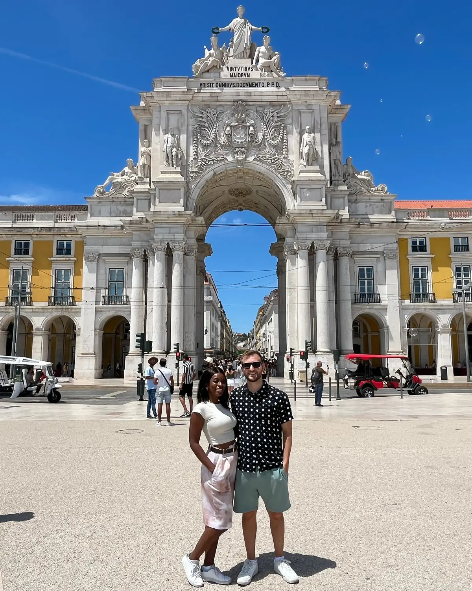

Start here01
Praça do Comércio & the Rua Augusta Arch
📍 Baixa, on the riverfront
Lisbon's grandest square opens straight onto the Tagus river, framed by yellow arcades and the triumphal Rua Augusta Arch. It's the perfect place to start: walk through the arch and up Rua Augusta, the pedestrian street that leads into the heart of the Baixa. You can also go up to the top of the arch for a great view over the square.
Huge open squareGreat first photo